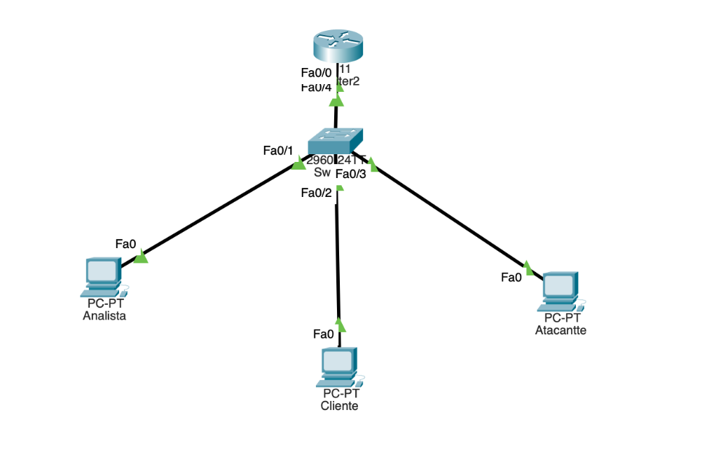
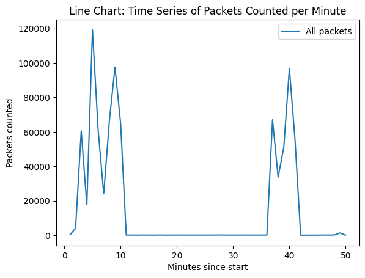
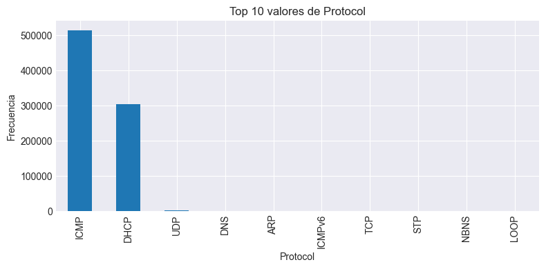
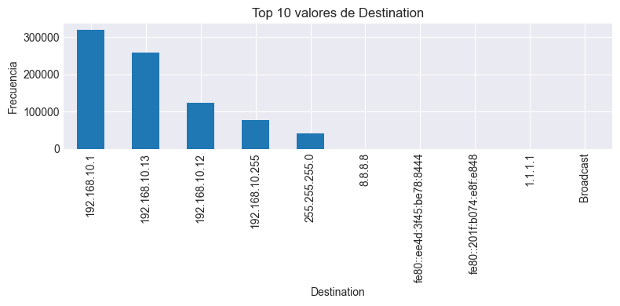
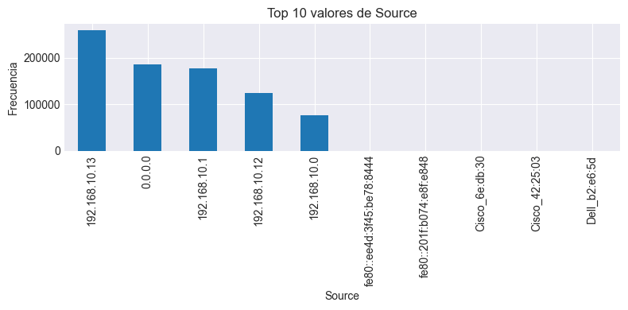

Simulación, Diagnóstico y Prevención de Ataques
Simulación Topológica


se descubrió que, dada la configuración del switch en el laboratorio de pruebas, el análisis solamente podrá ser realizado desde el ordenador de la víctima.
| ## Ataques ICMP Flood: 1. El atacante envía una gran cantidad de solicitudes ICMP (ping) a la víctima. 2. Cada solicitud requiere ser procesada, ya que el paquete tiene que responder con un “echo reply”. 3. Si el volumen de solicitudes es demasiado alto, los recursos de la víctima (GPU, memoria, etc) se saturan. 4. Finalmente, la máquina o red atacada se puede volver inaccesible. |
| DHCP Starvation: Este ataque es del tipo de negación de servicio (DoS), su objetivo es dejar sin direcciones IP disponibles a un servidor DHCP. Así funciona: |
| 1. El atacante envía un paquete DHCP Discover como si fuera un cliente normal, pero lo hace con direcciones MAC falsas en cada petición. 2. El servidor responde ofreciendo una dirección IP disponible en su pool. 3. El atacante confirma y acepta de la IP ofrecida con un DHCP Request. Cómo usa una MAC diferente cada vez, el servidor piensa que es un dispositivo nuevo. 4. El servidor registra esa IP como si fuera asignada a un cliente real. Se repiten los pasos anteriores cientos o miles de veces con MAC falsas cada vez. 5. Como resultado si un cliente real quiere acceder a la red, se le niega porque ya no quedan direcciones IP disponibles y así niega el servicio completamente. |
| ## Primer Acercamiento |
| Se realizó en un laboratorio la topología mostrada. Se siguieron las siguientes líneas de código en la terminal de la consola ligada al router para la configuración: |
bash enable configure terminal interface GigabitEthernet 0/0 ip address 10.0.0.1 255.255.255.0 no shutdown exit ip dhcp excluded-address 10.0.0.1 10.0.0.10 ip dhcp pool JUAN network 10.0.0.0 255.255.255.0 default-router 10.0.0.1 |
| Después de que se asignaron las IPs a las computadoras y se creó el grupo DHCP, se realizaron pings infinitos para documentarlos en la herramienta WireShark. |
| (Ejemplo de comando en terminal Adjunto) |
bash ping 10.0.0.4 -t |
| Lo que se observó en la plataforma al realizar los pings es que un ordenador no puede abrir paquetes con destinatarios ajenos. Se sospechó que esto podría deberse a los permisos configurados en el Switch del Laboratorio. |
| ### Características del Ambiente Construido |
| Con fines de replicabilidad, se nombran a continuación las características de la práctica de laboratorio. |
| Sistema Operativo Windows. |
| Herramientas necesarias |
| - Wireshark - hping3 o nping (Nmap) para ICMP Flood. - Ettercap, arpspoof (dsniff) o Bettercap para ARP Spoofing. - Yersinia o dhcpstarv para DHCP Starvation. |
| Permisos requeridos |
| - Acceso de administrador de sistema. - Permisos para habilitar el modo promiscuo. - Permisos para ejecución de herramientas de red. - Acceso a la red de prueba sin firewall activado. |
Resultados
Primeramente, se grafica el flujo de paquetes a través del tiempo. Se observa un incremento significante en referencia al tráfico no priorizado sobretodo en los primeros diez minutos y entre los minutos 37 y 42. Se indaga más al filtrar los tipos de paquetes en el tiempo total de corrida.

Se descubre que hubo una proporción excesiva de paquetes ICMP y DHCP, la cual excede en millones al resto de protocolos. Esta evidencia levanta sospechas al ser comportamiento anómalo.

Al sobreponer este filtro de paquetes sobre la linea de tiempo anterior, se comprueba que esos protocolos son el origen de los picos de tráfico. Ahora la pregunta en cuestión es quiénes son los culpables.

En conjunto, analizamos las direcciones IP origen y destino ordenadas por frecuencia en la base de datos. El hallazgo es evidente: la dirección conflictiva corresponde a la 192.168.10.13 con dirección a la 192.168.10.1 (la cual corresponde al ruteador). Esto da indicadores de ataques con intención de deshabilitar al ruteador.


Regresando a la serie de tiempo y teniendo en cuenta a los involucrados, se identifica una intención de ataque, por lo que se desgloza el comportamiento.
La línea de tiempo muestra dos fases distintas de ataque: primero un ICMP Flood, con un alto volumen de paquetes en los primeros minutos, seguido por un DHCP Starvation, donde el tráfico DHCP aumenta significativamente hacia el final.
Explicación de Evidencia y Comportamiento de los Ataques
ICMP Flood El ataque ICMP Flood es más rápido y visible, ya que satura el ancho de banda o la capacidad de respuesta del servidor mediante miles de solicitudes ping. Es eficiente a corto plazo, pero fácil de detectar y mitigar (por firewalls o limitación de ICMP).
DHCP Starvation El DHCP Starvation, en cambio, no genera tanto tráfico, pero bloquea la asignación de IPs válidas a los clientes legítimos. Es más silencioso y persistente, por lo que puede ser más eficiente estratégicamente, especialmente en redes locales (LAN).
Conclusión de Fase
Aunque ambos ataques logran afectar la disponibilidad de la red, el DHCP Starvation es más eficiente a nivel estratégico, ya que usa menos recursos para saturar el serivcio del router. En cambio, el ICMP Flood provoca un impacto inmediato con un pico más alto, pero es más fácil de detectar y bloquear.
Diagnóstico
Debido al análisis frecuentista podemos aseverar que los dos ataques identificados fueron de DHCP starvation y ping flood, dado que sus respectivos protocolos tuvieron las mayores interacciones. A su vez, podemos identificar puntualmente al atacante y a la víctima por la frecuencia de destinatario y origen.